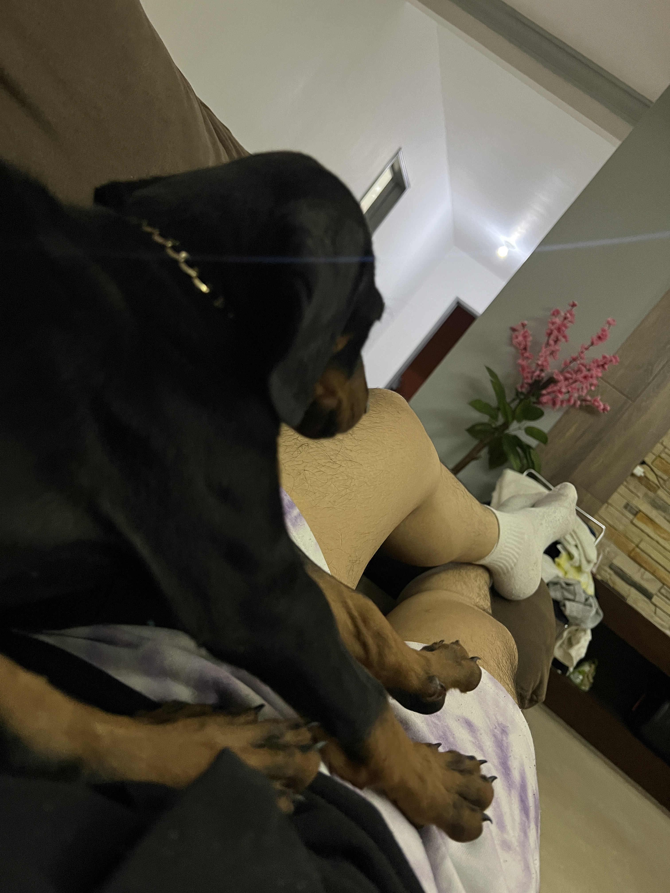
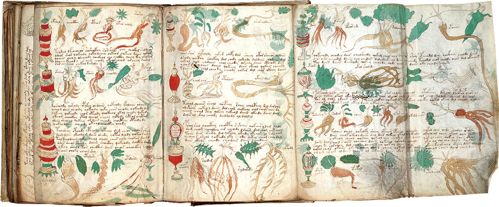

Algo que realmente disfruto es capturar aquellos paisajes que me resultan únicos, llamativos o simplemente hermosos. Ya sea por la luz, los colores o el momento en que los encuentro, cada fotografía representa una forma de conectar con el entorno. Estas son algunas de las imágenes que he tomado y que me gustaría compartir
Estudios
Secundaria
- Nombre de la Escuela: Instituto Guadalupe Victoria
- Ubicación: Ixmiquilpan, Hidalgo
- Años cursados: 2015-2018

Preparatoria
- Nombre de la Institución: Preparatoria Guadalupe Victoria
- Ubicación: Ixmiquilpan, Hidalgo
- Años cursados: 2018-2021

Universidad
- Nombre de la Universidad: Instituto Politécnico Nacional (IPN)
- Carrera: Ingeniería en Sistemas Computacionales
- Ubicación: Ciudad de México
- Años cursados: 2022- Presente
- Notas Adicionales: Exmiembro del club de algoritmia y participación en la primera y segunda fecha de ICPC 2023

Pasatiempos
Pasar tiempo con mi Familia
Uno de los momentos que más disfruto en mi vida es poder compartir tiempo de calidad con mis papás y mi hermano. Esto lo valoro aún más desde que entré a la universidad y paso bastante tiempo lejos de ellos. Los momentos que más disfruto son cuando platicamos durante la comida y cuando salimos de viaje.

Pasear a mis mascotas
Salir con mis perros a caminar o jugar con ellos en el campo es un pasatiempo que me alegra mucho, ya que me ayuda a desconectarme de las pantallas o de algún dispositivo electrónico. También me permite relajarme y disfrutar de la naturaleza.
Jugar videojuegos
Jugar videojuegos es algo que he hecho desde que tengo 10 años, por lo que es una parte de mi vida que me entretiene. Aunque a veces me estresa, también me ayuda a salir un poco de la rutina y olvidarme de algunas preocupaciones.

Criptografía
El One-Time Pad
El One-Time Pad es un método de cifrado que, cuando se utiliza correctamente, es teóricamente imposible de descifrar. Requiere una clave aleatoria tan larga como el mensaje y que nunca se reutilice. Aunque su implementación práctica es compleja, representa el ideal de seguridad perfecta en criptografía.

Criptografía Neural
La criptografía neural es un campo emergente que explora el uso de redes neuronales artificiales para crear y romper cifrados. Estas redes pueden aprender y adaptarse, lo que ofrece nuevas posibilidades y desafíos en la seguridad de la información.

El Manuscrito Voynich
El Manuscrito Voynich es un libro ilustrado, escrito en un idioma y sistema de escritura desconocidos, que ha desconcertado a criptógrafos, lingüistas y científicos desde su descubrimiento en 1912. A pesar de numerosos intentos, su contenido sigue siendo un misterio, lo que lo convierte en uno de los enigmas más famosos de la criptografía.
